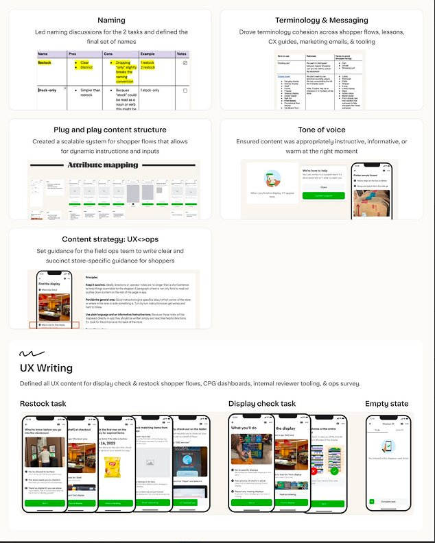
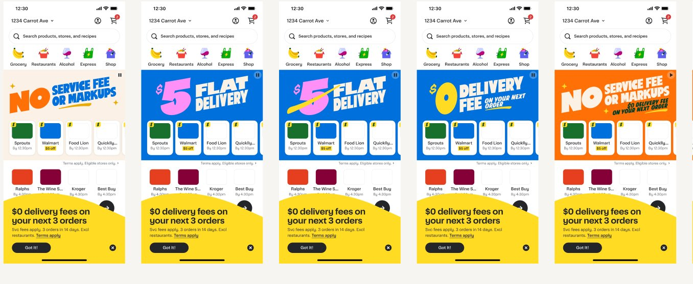

Selected Work
Five projects. One throughline: words that earn their space.
Shopper Celebration Reel

Instacart wanted to celebrate shoppers with a personalized in-app reel—think Spotify Wrapped, but make it grocery. I developed the storyline and the framework for how dynamic content would flow through each step, shaping a narrative arc that treated shoppers like humans, not a number in a funnel. The standout moment was taking a real data point (shoppers pick more bananas than any other item) and making it funny.
Instagram Ads Privacy Control

I defined the content strategy for Instagram's first-ever ads privacy control, translating legally complex policy into clear, calm UI copy. That meant developing naming and framing for topic categories, partnering with legal, privacy, and policy teams to ensure every word passed scrutiny without losing plain-language accessibility, and leading content alignment across Instagram and Facebook to keep the narrative consistent across both platforms.
Shopper Task Platform

When Instacart built a new task system for shoppers, nothing had a name yet. I named the shopper-facing tasks, wrote all the educational guidance, set the tone direction, and developed the full terminology system. The goal was simple: shoppers should be able to move through the store and understand exactly what to do.
The Instacart Product Tone Map

I contributed to Instacart's first-ever product tone map—defining one of the five tone registers and helping shape the criteria across the others. This gave every writer, PM, and designer a shared vocabulary so that tones like "warm" and "helpful" meant the same thing to everyone.
Instacart Saver Stores

This project required writing banner copy that could flex across new users, churned members, non-members, and Instacart+ subscribers. Each had a different value prop and different stakes. I developed a dynamic content system with options for every scenario.